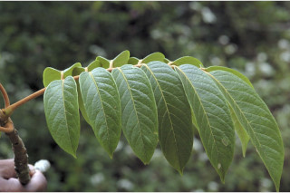
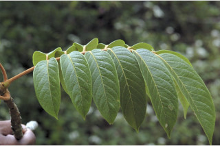
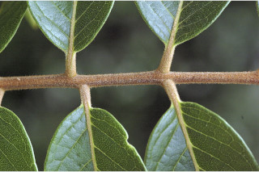
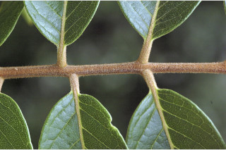
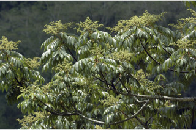
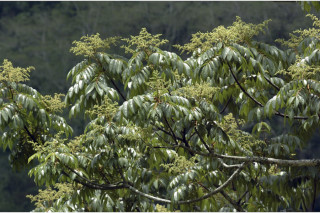

| Leaves : | Leaves compound , imparipinnate , alternate , spiral ; rachis terete , rusty tomentose , pulvinate ; petiolule 0.2- 1.5 cm long, rusty tomentose ; leaflets 3-7 pairs with one terminal leaflet , subopposite or opposite , 6.5-15 x 2.5-5 cm, lanceolate to ovate - oblong , apex gradually acuminate , base asymmetric and acute or rounded , margin entire , sometimes remotely dentate , thinly coriaceous , tomentose on nerves beneath; midrib canaliculate above; secondary_nerves ascending; tertiary_nerves coarsely reticulate . |

 

 



 
